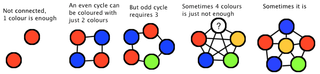

One of the ways to print T-shirt designs is by a process called screen printing -- a design is broken up into "screens" that allow paint to fill certain solid regions. This results in a higher quality print, but requires additional setup (and thus cost) for every colour used.
Having started what we hope to turn out to be a successful T-shirt design company, we want to minimize the printing costs. Each design can be modelled as a graph, and we want to be able to colour it such that no two adjacent nodes are of the same colour (think of it as a map of countries -- every country border has two different colours). What is the minimum number of colours that each design requires?. Let's assume that paying for more than 4 is too much, so if we can't colour it in 4, we'll give up.
The input file DATA5.txt will contain 5 sets of input. First line will contain a positive integer 1 <= N <= 20, number of edges in a graph, followed by N lines describing the graph. Each such line will contain two positive integers, separated by a single space -- a connection between two nodes identified by such integers. If both node IDs are the same, treat it as a disconnected node (there is no edge to itself).
The output file OUT5.txt will contain 5 lines, the minimum number of colours required to colour the graph, or 0 if 4 is not enough.
2 1 1 2 2 4 1 2 2 3 3 4 4 1 5 1 2 2 3 3 4 4 5 5 1 10 1 2 2 3 3 4 4 5 5 1 1 3 1 4 2 4 2 5 3 5 10 1 2 2 3 3 4 4 5 5 1 6 1 6 2 6 3 6 4 6 5
1 2 3 0 4